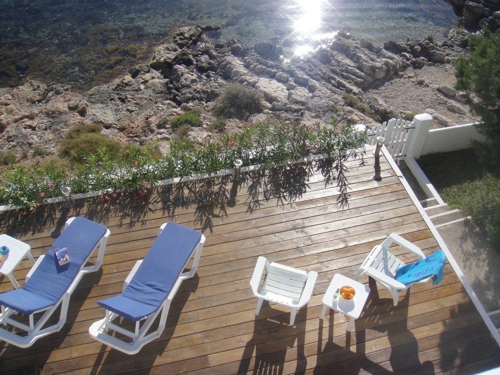
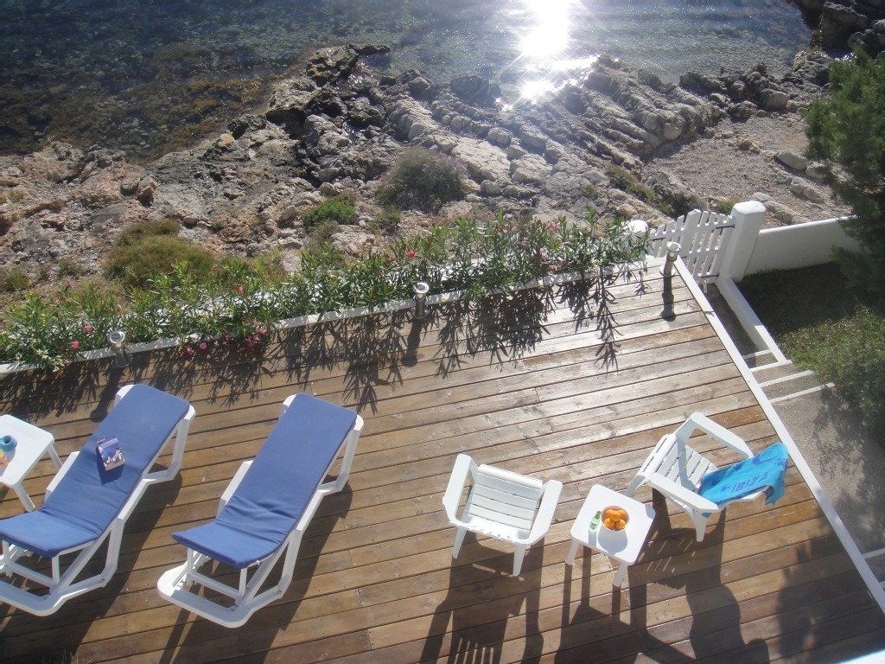
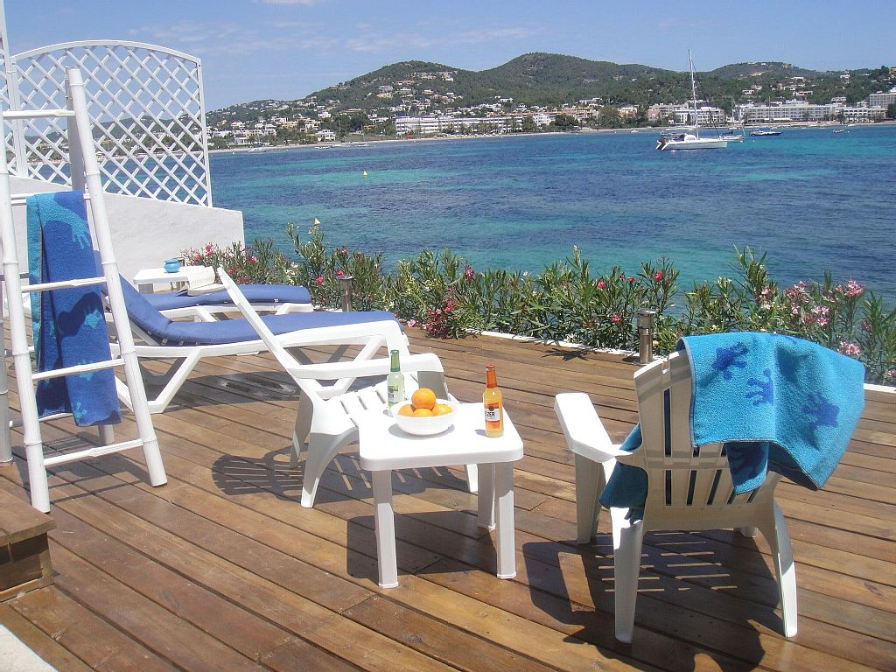
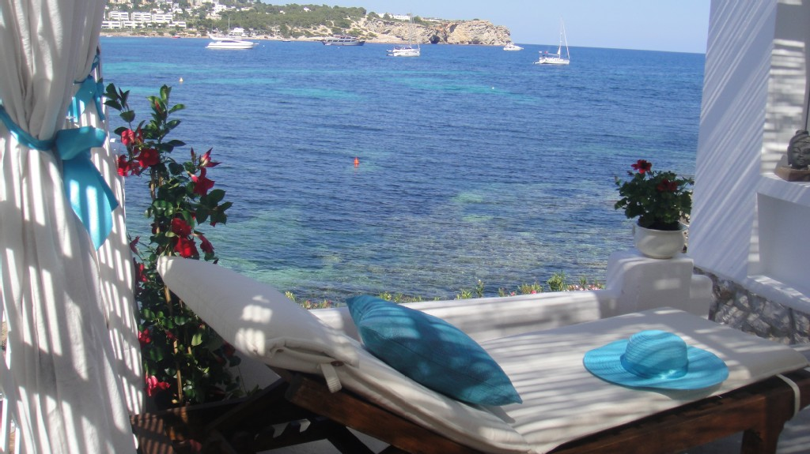
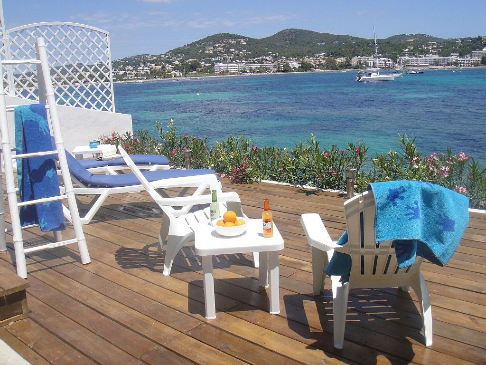
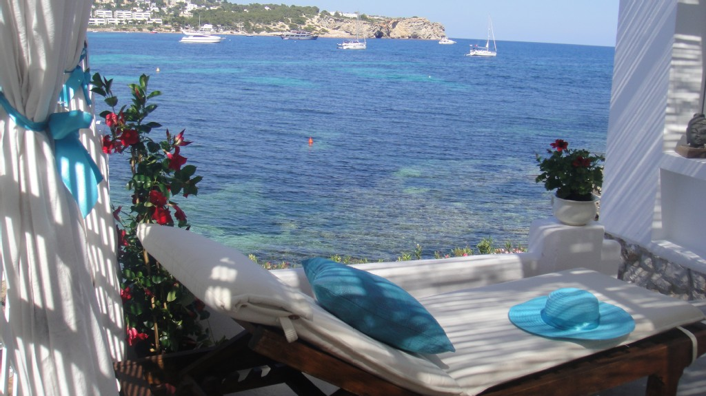

Casa Daniela está compuesta de 2 dormitorios dobles con dos baños en suite con ducha, cocina americana totalmente equipada comedor contiguo en porche, amplio salón con televisor y suelo de cristal, mirador porche sobre la orilla del mar, 1 terraza solárium de madera a tres metros del agua, 1 terraza césped con sabinas y hamacas para refresco, 1 terrazas superior amueblada. PLAYA PRIVADA ...........prácticamente!!! La casa dispone de dos dormitorios con baños ensuite de nueva construcción anexos a la casa. Se tarifan complementariamente e incrementan la capacidad hasta 8 personas.
Casa Berlin está dispuesta en tres niveles. En el nivel superior: 1 habitación con cama doble (180 * 190 cm), 1 dormitorio con dos camas individuales (90 * 190 cm), 1 cuarto de baño con ducha, cocina totalmente equipada con zona de comedor terraza con vistas al mar, salón TV y comedor interior, mirador sala de estar con tresillo de mimbre con vistas al océano. En el nivel medio, una gran terraza cubierta con pérgola y chill-out y muebles de teca. Por último, junto al mar, un jardín mediterráneo y un solarium de madera a tres metros del mar, equipado con mesas, sillas y tumbonas. La falta de piscina se suple con un excelente acceso al mar. Hay una piragua a disposición del cliente. Casi una .................. PLAYA PRIVADA!


 



 


